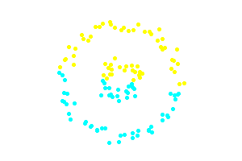
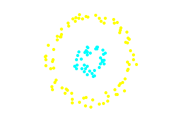
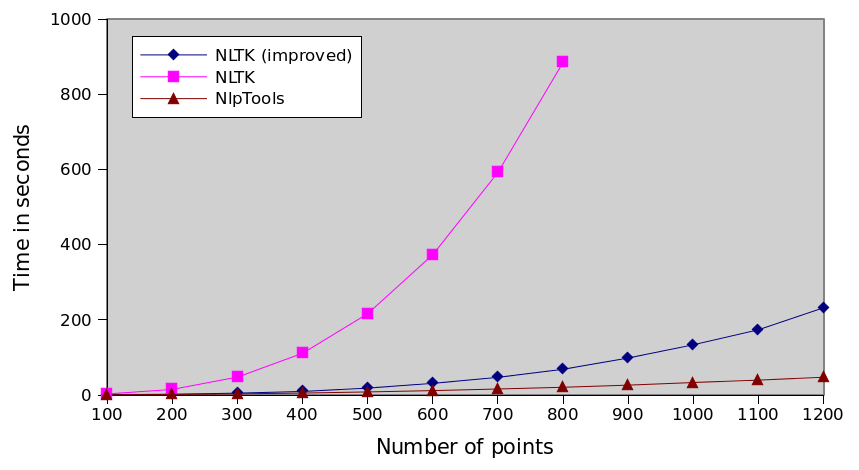
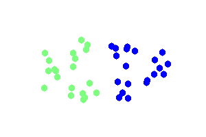

Project: Programming language detection
Recently I had the need to identify the programming language of several snippets of
code without relying on the file extension. I originally thought that it would be trivial
to find code that does exactly that but as it turns out I have only found one
implementation in Ruby. Thus, I decided to write my own source classifier
in php.
Finding a dataset
The hardest part was to find and download a dataset for use with the classifier. I decided
to download sources from Google code jam 2013 solutions. This decision was made for the following
two simple reasons, firstly I would use the model to classify similar types of source code
(small solutions to programming problems) and secondly it provides easy access to many different
programming languages.
The quality of the produced classifier heavily depends on the dataset so one could improve
the performance of the provided model by training on a different dataset.
Classification model and Features
Since it seemed to work well for Mr Chris Lowis I decided to use the same
simple Naive Bayes model. The sources are read as is, they are not normalized. I use
the WhitespaceAndPunctuationTokenizer to split the sources
into tokens.
The feature factory is a simple frequency feature factory that cuts off the maximum frequency
at 4 occurences.
class CodeFeatures implements FeatureFactoryInterface
{
public function getFeatureArray($class, DocumentInterface $doc)
{
$tokens = $doc->getDocumentData();
foreach ($tokens as $tok=>&$v) {
}
return $tokens;
}
}
Using the LanguageDetector
I have wrapped the MultinomialNBClassifier in a class
to ease its use, its training and its serialization.
$detector = LanguageDetector::loadFromFile("/path/to/model");
$lang = $detector->classify(<<<CODE
#include <stdio.h>
int main() {
printf("Hello world!");
}
CODE
);
echo $lang, PHP_EOL; // C
In the github repository there is already a pretrained model that
classifies among the following languages (the popular ones according to Google code jam):
- C
- C#
- C++
- Clojure
- Go
- Haskell
- Java
- Javascript
- MATLAB
- Pascal
- Perl
- PHP
- Python
- Ruby
- Scala
- Visual Basic
Train on your own files
In the repo there is also a bin directory that provides a lang-detect script. It is a simple
script that allows training of new models on new datasets, evaluation of models and using a model
to classify a file as a source code.
Examples:
# retrain the provided model
bin/lang-detect train "data/train"
# evaluate the trained model
bin/lang-detect evaluate "data/test" # should print 0.98
# classify some code
bin/lang-detect classify "some/path/code.cpp"
The structure of the directories for training and evaluating should be one subdirectory
per class and each subdirectory should contain one file per document (one source file).
You can see an example of the above structure in the data/train and data/test directories.
Future work
Since it is a much less interesting and unimportant problem than the ones I usually like to
battle with in my free time I have left a lot of concepts unexplored and went for the fastest
half good solution (although it turned out better than half good).
One should be able to get much better results by changing both the feature factory and the tokenizer.
Tokenizer
The tokenizer should probably be able to understand different types of strings and ignore them or mark
them as "string". Maybe the same should apply to comments as well. Operators, parentheses and brackets
should be parsed as separate tokens but not every single punctuation character. Some could be grouped
like -> or =>.
Feature factory
As far as the feature factory is concerned, document frequency dictionaries could be used to emphasize
to the keywords per class and differentiate them from the identifiers. Words at the beginning and ending
of the document should be weighted differently as they are intuitively more important in
differentiating the programming languages (imports, opening/closing tags, etc). Finally statistics about
the identifiers could be collected, for instance whether camel casing or underscores are preferred.
In this article I will be introducing Density Based Spatial Clustering of Applications with Noise, known as DBSCAN.
DBSCAN is the latest addition to the Clustering namespace of php (it is still under development and not merged into
master).
DBSCAN is a density based clustering algorithm because
it finds a number of clusters starting from the estimated
density distribution of corresponding nodes
Wikipedia
Dbscan Implementation
The current implementation in NlpTools takes as a parameter an object that implements SpatialIndexInterface.
// comments stripped
interface SpatialIndexInterface
{
public function setDistanceMetric(Distance $d);
public function index
(array &$docs); public function add($doc);
public function regionQuery($doc, $e);
public function kNearestNeighbors($doc, $k);
}
This is used to abstract away the logic of searching a set of points for neighbors so that this process can be
optimized. For instance we could implement k-d trees or ball trees for
faster neighbor searching. The current implementation uses naive linear search and has complexity O(n2).
Examples
use NlpTools\Clustering\Dbscan;
use NlpTools\Similarity\Euclidean;
use NlpTools\Documents\TrainingSet;
use NlpTools\FeatureFactories\DataAsFeatures;
$tset = new TrainingSet();
// load the training set with documents
// create a large outer circle of points
for ($i=0.0;$i<2*M_PI;$i+=M_PI/20) {
$tset->addDocument(
'A',
EuclideanPoint::getRandomPointAround(
8
)
);
$tset->addDocument(
'A',
EuclideanPoint::getRandomPointAround(
8
)
);
}
// create an inner smaller circle of points
for ($i=0.0;$i<2*M_PI;$i+=M_PI/10) {
$tset->addDocument(
'B',
EuclideanPoint::getRandomPointAround(
8
)
);
$tset->addDocument(
'B',
EuclideanPoint::getRandomPointAround(
8
)
);
}
// we are stating that we consider a region to be dense
// if it has at least 4 points in a circle of radius 20
$clust = new Dbscan(
4, // the minimum number of points needed
20, // the radius in which we are looking for points
new Euclidean() // we will use the Euclidean distance
);
// do the actual clustering
list($clusters,$noise) = $clust->cluster($tset, new DataAsFeatures
());
The above code creates a very simple dataset with two distinct clusters in the two-dimensional euclidean space.
This simple dataset is often used as an example to illustrate the differences between DBSCAN and K-Means.


The second example that follows illustrates the property of DBSCAN to identify noise points and determine the
number of clusters in the datatset. The dark blue points are noise. The points to be clustered are uniformly random.


Project: Greek POS Tagger
In this final post I will present a usable pos tagger model and cli application with 93.2% accuracy in
tagging parts of speech on the held out test set (improving noticeably on the results of the thesis
I base my work on).
Features
- The word
- One, Two and Three letter suffixes
- The word without the above suffixes
- The previous word
- The next word
- If the word contains a number
- If the word is one letter
function ($class, $doc) {
list($w, $prev, $next) = $doc->getDocumentData();
// the actual word in lower case
if ($len>3) {
// the word's suffixes
}
// the words without the suffixes
if ($len>5)
if ($len>4)
if ($len>3)
// the previous word
$features[] = "$class ^ ctx(-1)=".mb_strtolower($prev[0],"utf-8");
// the next word
$features[] = "$class ^ ctx(1)=".mb_strtolower($next[0],"utf-8");
$features[] = "$class ^ has_number";
$features[] = "$class ^ one_letter";
return $features;
}
Code
The code (not the models) can be found at github. Most
of the contents of the repository are for the console application. There are two files that might
interest anyone who wants to extend the tagger,
PosTagger.php
and PosTrainingSet.php.
Models
I am publishing one model trained on both the test set and the training set, on a total of 31554 tokens.
The complete model is 77MB serialized and contains more than half a million features. Although it contains
all the information learned from the training it is impractical to use and with a little bit of pruning
we can keep the same level of accuracy with one fifth the model size and startup time.
Thus, I will publish here 4 different files. 'model.bin' is the complete model. Each one of the others
named 'model_thre_{num}.bin' with num being a variable number is simply produced from model.bin after
removing all features with value less than or equal to {num}.
-
Usage
You can dowload the code from github and run composer install or download a usable (and executable)
phar archive.
git clone https://github.com/angeloskath/pos-tag.git
cd pos-tag/
composer install
With code
// require("phar://pos-tag.phar/vendor/autoload.php");
require("vendor/autoload.php");
$tagger = new \PosTagger();
$tagger->loadModelFromFile("path/to/model.bin");
// $tok = new NlpTools\Tokenizers\WhitespaceTokenizer();
// $tokens = $tok->tokenize("Η καλή μας αγελάδα βόσκει κάτω στην λιακάδα");
// $tokens = $tok->tokenize("The quick brown fox jumped over the lazy dog");
$tokens = array("Η","καλή","μας","αγελάδα","βόσκει","κάτω","στην","λιακάδα"); $tags = $tagger->tag($tokens);
// article adjective pronoun noun verb adverb article noun
With the console app
Download the console application and the models.
# download the console app
wget http://php-nlp-tools.com/files/pos-tag/pos-tag.phar -O pos-tag
chmod +x pos-tag
# download the model
wget http://php-nlp-tools.com/files/pos-tag/models/model_thre_0.49.bin -O model.bin
Now you can tag plain text in Greek. Examples:
# -m model.bin is not necessary because model.bin is the default
./pos-tag tag -m model.bin "Η καλή μας αγελάδα βόσκει κάτω στην λιακάδα"
# Assuming greek_text is a file containing some text in greek.
./pos-tag tag <greek_text
# You can see a pretty useful help message for every command
./pos-tag help tag
./pos-tag help features
# and of course you will see a list of available commands if
# you simply run the app
./pos-tag
# now follows an example tagging the first greek text that
# I found in one of the open tabs in my browser
./pos-tag tag -o "<w> <info><t></info><n>" "Το σώμα κειμένων του Ινστιτούτου Επεξεργασίας του Λόγου αναπτύχθηκε επί σειρά ετών και σήμερα περιλαμβάνει περισσότερες από 47.000.000 λέξεις"
Το article
σώμα noun
κειμένων noun
του article
Ινστιτούτου noun
Επεξεργασίας noun
του article
Λόγου noun
αναπτύχθηκε verb
επί preposition
σειρά noun
ετών noun
και conjunction
σήμερα adverb
περιλαμβάνει verb
περισσότερες adjective
από preposition
47.000.000 numeral
λέξεις noun
Project: Greek POS Tagger
Following Evangelia's paper we will be using a Maxent model for our final prediction model.
But training Maxent models is an order of magnitude slower than training a Naive Bayes model. We could simply
implement the features defined in the paper and train one final model, but because I want to gain a better
understanding of the POS tagger I will be implementing them one at a time and evaluating each time the improvement.
To avoid waiting, I will be using a simple Naive Bayes model.
Only the data as features
If we simply train a Naive Bayes model with the only features the presence of the words themselves then we have a model
that does not differ much from our baseline. Only one feature fires for each word and for the unknown words the prior
gets to decide the class (actually the results would be identical if it were not for smoothing the model).
Consequently the results are a model with a bit worse accuracy than the baseline but with much the same behaviour (it
still mistakes half the verbs for nouns).
Options at hand
Up until now the features do not rely at all on our knowledge as a linguist or even on our knowledge of the greek
language. As a matter of fact we could create such a baseline parser in any language just by feeding it a big
pre-annotated corpus.
To improve further we will have to add features that more or less depend on our knowledge of the task of recognizing
parts of speech. For instance the knowldge that the ending of verbs is an important characteristic of the greek
language or that if the previous word is "την" (an article) it is very unlikely that an article will follow.
We can separate the features in two categories.
- Contextual
- Language based
We will of course add features of both types in the end, but I would like to discuss the differences of those two
categories. I believe they deserve to be in different categories because they rely on different knowledge of the
language.
The contextual features are features that try to exploit the fact that combinations of words have meaning
e.g. "from the house" and "to the house" have exactly the opposite meaning. Contextual features can be generic, they
will always carry information about the current word, regardless the language.
Language based methods rely on our knowledge of the specific language (or family of languages) that we are targeting.
e.g. The fact that if the suffix of the word is 'ω' the word is probably a verb.
Contemplating on the Brill Tagger, what I have been describing above are rules that could be used in such a tagger.
For this machine learning based tagger we will describe (in code) the way of coming up with rules and then the model,
through the training process, will evaluate which rules are successful and should be relied upon and which are not.
For instance we will not be using as a feature the following function 'ends_in_omega' but the function 'last_char'.
// not a good feature that only checks one possible
// suffix and relies on our expert knowledge that this
// suffix is important
function ends_in_omega($w) {
}
// a good feature. It does not rely at all on our
// knowledge of a specific suffix. It simply asks for
// the model to evaluate if a suffix is important for
// a specific part of speech
function last_char($w) {
}
Actually trying out features
Data
I have already mentioned that having only the data as features results in
a slightly worse result than our baseline due to model smoothing.
function ($class, $doc) {
list($w) = $doc->getDocumentData(); }
Suffixes
Using the last three letters of the word should drastically improve the
performance of our tagger because it shall now recognize the common suffixes
produced by the greek grammatical conjugation, thus it shall improve upon the
most important flaw of our tagger, the huge misclassification of verbs.
function ($class, $doc) {
list($w) = $doc->getDocumentData(); return;
return $suffixes;
}
Indeed those features improve the accuracy from the baseline (Data only) 80.6% to
87% and most importantly they improve verb's recall from 49.47% to 95.59% .
Context
Using the context of the two surrounding words we expect a general improvement
on the quality of the tagging not specific to any part of speech.
function ($class, $doc) {
list($w,$prev,$next) = $doc->getDocumentData();
for ($i=0;$i<count($prev);$i++) { $f[]= "prev($i) = {$prev[$i]}";
}
for ($i=0;$i<count($next);$i++) { $f[] = "next($i) = {$next[$i]}";
}
return $f;
},
What we are actually getting though is more complex than that. If applying this
feature on the baseline we will see a decrease in accuracy from 80.6% to 78.7%.
Yet, with a second look we can see that the quality of the tagging has increased.
The mistakes are spread out more (instead of being clustered on the nouns (not
necessarily a good thing)) and we can now identify approximately 80% of the verbs
instead of 50%.
In addition, if combined with the suffixes feature the overall accuracy increases
to 88.3% from 87%.
In the next post
In the next and last post of this series I will present all the feature functions,
package the tagger code in a github repository and package the trained model for
ease of use (maybe even a cli application).
Project: Greek POS Tagger
Within a recent attempt of mine to develop tools for natural language processing in Greek I decided to implement
the state of the art in Greek POS tagging (the paper reporting the best accuracy that I could find) and offer the
result in a way that it will be easy to use in one's projects as a subsystem.
The tagger is based on the work of Evangelia Koleli and
her BSc thesis (the paper is in Greek) in 2011. She was
kind enough to provide me with the dataset she used. Evangelia's work also provides an API for using the tagger in
your own projects (in Java), I am aiming at even simpler integration (and especially web projects hence php).
In this series of posts I will be documenting the development of the tagger.
Problem statement
In corpus linguistics, part-of-speech tagging (POS tagging or POST), also called grammatical tagging
or word-category disambiguation, is the process of marking up a word in a text (corpus) as corresponding
to a particular part of speech, based on both its definition, as well as its context.
Wikipedia
In this project I will be using only the small set of parts of speech because I believe it is a good tradeoff
between information and model simplicity. The small set of categories as defined by Evangelia Koleli is the
following:
- verb
- noun
- adjective
- adverb
- article
- pronoun
- numeral
- preposition
- particle
- conjuction
- punctuation
- other
The approach
POS Tagging is a sequence tagging problem. The algorithms used aim at finding the most likely sequence of
tags that could correspond to the observed sequence, the words. It is also, usually, dealt with on a per
sentence basis.
For this tagger the approach is actually quite simpler and straightforward. We deal with the problem as a
simple classification problem. We can use the complete word sequence for feature creation but
none of the tag sequence (ex.: we cannot use the knowledge that the previous word is a noun but we can use the
previous word).
Baseline
Before we start discussing the tagger implementation I would like to present a baseline parser. The baseline
parser simply tags each word with the most common tag this word had in the training set. If it has never seen
the word before then it tags it with the most common tag (usually noun). Actually, adding a set of targeted
transformation rules to the above baseline classifier results in the simple and effective Brill Tagger.
The Baseline parser usually has an acuraccy of approximately 90% which is huge for a baseline, compared to
other classification tasks, but it makes intuitive sense for this task since many words can only be tagged with
one part of speech.
class Baseline implements Classifier
{
protected $map;
protected $classmap;
public function __construct(TrainingSet $training) {
$this->classmap = $entry;
foreach ($training as $class=>$d) {
list($w) = $d->getDocumentData(); if (!isset($this->map[$w])) $this->map[$w] = $entry;
$this->map[$w][$class]++;
$this->classmap[$class]++;
}
foreach ($this->map as &$occ) {
}
}
public function classify
(array $classes, Document
$d) { list($w) = $d->getDocumentData();
if (!isset($this->map[$w])) return key($this->classmap);
return key($this->map[$w]); }
}
This Baseline tagger learned from the training set has an accuracy of 82.62% on the test set. Yet this tagger is
a very poor tagger and this can be easily illustrated if one sees the confusion matrix or simply the per tag
precision and recall shown in the table below.
|
verb |
noun |
adjective |
adverb |
article |
pronoun |
numeral |
preposition |
particle |
conjuction |
punctuation |
other |
| Precision |
100.0 |
60.65 |
91.03 |
96.21 |
94.80 |
92.46 |
96.95 |
98.11 |
98.92 |
99.78 |
100.0 |
100.0 |
| Recall |
49.47 |
98.90 |
41.90 |
85.23 |
98.55 |
73.50 |
72.94 |
99.18 |
98.92 |
98.09 |
98.93 |
26.82 |
From the table above one can see that more than half of the verbs have been tagged incorectly. By checking the
confusion matrix we see that they have been mostly tagged as nouns (most misclassifications are) which also explains
the really bad precision of the noun tag.
The above shows that accuracy or even precision, recall and F1 score are not good metrics of the quality
of a POS tagger. Using the confusion matrix one can understand how badly a misclassification would stand out to a
human evaluator. Classifying verbs as nouns definitely does not look good even with 90% accuracy.
In the next post we will be evaluating features using the much simpler Naive Bayes model.
Project: Sentiment detection
In the second post in the series of sentiment detection we will train a
maximum entropy model to perform the exact same classification on the exact same data and compare the
procedure and the results.
Getting the optimizer
Later on NlpTools will support more external optimizers like Megam or Mallet but for now the only
optimizer supported is the one developed specifically for NlpTools in Go that
performs parallel batch gradient descent.
You can download binaries for you architecture or build from source.
Training a Maximum Entropy model
There are only three changes required (to our previous file) to train and evaluate a Maxent model
instead of a Naive Bayes model.
Feature Factory
You need to create a different type of feature factory. In Maxent features should target specific classes
so in each feature the class name should be prepended. In addition, we should model presence and not
frequency of features. To achieve the above we will use the FeatureFactory
FunctionFeatures.
$ff = new FunctionFeatures(
function ($c, $d) {
function ($t) use($c) {
return "$c ^ $t"; // target the feature to a specific class
},
$d->getDocumentData()
);
}
)
);
Model instantiation
We should change the model instatiation code to now create and train a Maxent model.
// create empty Maxent
$model = new Maxent
(array());
$model->train(
$ff, // the feature factory
$tset, // the documents
new ExternalMaxentOptimizer(
'gradient-descent' // the path to the external optimizer
)
);
Classifier
Finally, we need to change the classifier from MultinomialNaiveBayes to FeatureBasedLinearClassifier.
$cls = new FeatureBasedLinearClassifier($ff, $model);
We then run the php script with the exact same parameters as in the previous post. Training time will
take longer this time.
Results
Maximum entropy models usually perform a bit better than Naive Bayes (on par with SVM). They are, though,
much harder to train. Our model confirms the rule by achieving 86% accuracy on
Pang's and Lee's dataset (No features other than the data).
First of all, I want to clarify that this post is not about bashing NLTK or even implying that NlpTools can be a
replacement for the great tool NLTK is. It is simply a comment on a bad implementation of an algorithm that
is probably not considered important by the NLTK developers.
In the rest of the post I will assume that you have read the previous post regarding hierarchical
clustering algorithms, their asymptotic time complexities and what I have chosen to implement so far in NlpTools.
Introduction
I wanted to test the output of the hierarchical clustering implementation in NlpTools so I decided to run a
comparison of the resulting dendrograms with an already established and tested library. I browsed NLTK and
read through the clustering package's documentation page. Based on the information there
I went on to look at the implementation at github.
Naive implementation
NLTK's implementation is the one described in the previous post as naive. It has time complexity O(n3).
According to the docs, they chose to support only the cosine similarity distance metric and the group average
linkage method because thus they could do some optimizations and gain a speed up, so there must be something I
am missing. In addition, NLTK uses numpy for efficient computation of matrix operations.
Considering the above, I still thought php would be slower since I did not even use the native heap implementation
(SplHeap) for the linkage method. I created a dataset of two-dimensional random points and decided to
run and compare the times. The code that I used to run the clustering and get the times can be found in this
gist (I wrote the gist before I decided to write this post).

How bad the implementation actually is
As I have mentioned already the implementation is asymptotically worse than the one in NlpTools. But does this
really account for the huge difference shown on the above graph. Actually it doesn't. NLTK does not use a
dissimilarity matrix at all in this implementation. It recomputes the pairwise cluster similarity again for each
merge. That means, besides the unnecessary function call, that the asymptotic complexity of the algorithm is even
worse (something not shown by this sample dataset). The complexity of the algorithm is actually O(n3•M)
where M is the number of dimensions that our points have.
Keep in mind that this dataset's points only have two dimensions which means that the difference we see here is
mostly due to the function call overhead and not due to the data dimensionality problem (which can be huge especially
when dealing with text data).
Assumptions about why
Saving memory
Using a matrix of pairwise similarities or dissimilarities requires O(n2) memory space while computing
the similarities each time only requires O(n) for the clusters. Thus NlpTools would exhaust a computers memory
before NLTK ever reached to 50%. On the other hand, if it ever reached 50% there is no way it would finish computing
the clusters in our life time, so there is not much point in saving memory (except if the computer had really small memory, about 100MB).
Relying too much on numpy
Numpy is a great library for fast matrix operations in python, that doesn't mean that numpy operations are O(1)
constant time. Accessing lists and dicts in python, on the other hand, is. One thing one can assume is that NLTK
developers got a bit carried away by the greatness of numpy and thought it to be the tool for every job. The
"efficient speed up" is actually what makes this implementation that slow.
10+ times speed up with 46 lines of code
The following changes are a quick and dirty addition of a similarity matrix to the algorithm. Asymptotic time
complexity still remains O(n3) and memory usage is now O(n2). The code is a drop in replacement
for the lines 46 to 73 of nltk/cluster/gaac.py
that doesn't require changes in any other part of the nltk cluster module. Moreover, by making a small change in the
11th line below this implementation could accept any function as a distance metric.
# variables describing the initial situation
N = len(vectors)
cluster_len = [1]*N
cluster_count = N
index_map = range(N)
# construct the similarity matrix
sim= {}
for i in xrange(N):
for j in xrange(i+1,N):
sim[ (i,j) ] = self._average_similarity(vectors[i],1,vectors[j],1)
while cluster_count > max(self._num_clusters, 1):
(i,j),_sim = max(
sim.iteritems(),
key=lambda x: x[1])
# update similarities
cli = cluster_len[i]
clj = cluster_len[j]
cl = cli+clj
del sim[ (i,j) ]
for x in xrange(i):
if (x,i) not in sim: continue
sim[ (x,i) ] = (sim[ (x,i) ]*cli + sim[ (x,j) ]*clj)/cl
del sim[ (x,j) ]
for x in xrange(i+1,j):
if (i,x) not in sim: continue
sim[ (i,x) ] = (sim[ (i,x) ]*cli + sim[ (x,j) ]*clj)/cl
del sim[ (x,j) ]
for x in xrange(j+1,N):
if (i,x) not in sim: continue
sim[ (i,x) ] = (sim[ (i,x) ]*cli + sim[ (j,x) ]*clj)/cl
del sim[ (j,x) ]
# merge the clusters
cluster_len[i] = cl
self._dendrogram.merge(index_map[i],index_map[j])
cluster_count -= 1
# update the index map to reflect the indexes if we
# had removed j
for x in xrange(j+1,N):
index_map[x] -= 1
index_map[j] = -1
Graph running times
For the following graphs each algorithm was run 10 times and the average is plotted. I would also plot the standard
deviation but it was insignificant. The data can be found here as csv and here as a gnumeric
document.
Comparison of every implementation

NLTK series is incomplete because it took too much time to run the tests. You can interpolate that it would take
more than 8 hours to actually cluster 1200 points ten times.
Relative performance
The following graph is actually the most interesting. It shows that with this improvement we have not actually solved
any problem, we have simply made the algorithm 13 times faster. The execution time still increases by the cube of
the number of points which means that the NlpTools implementation will always be incrementally faster as the number
of points increases.

Hierarchical clustering is the process in which given a dissimilarity matrix
between documents one has to join those that are most similar and update the
matrix given an update strategy (single/complete link,
group average, etc)
Naive case
The above process, in the general case, is of complexity O(n3) since we have
to traverse n2 elements (in the matrix) and find their minimum and we have to do
this n times. If one does code it this way, especially in PHP that is a relatively
slow language, the maximum number of documents that can be clustered in a reasonable
time (less than a day) is about 1000 (depending heavily on the computer).
Improving the general case
One could improve the general case of O(n3) simply by noticing that most of
the time is spent looking for a minimum. If we use a heap instead of
a matrix, then finding the minimum is an O(1) operation. Yet inserting and removing from
the heap (as we updated the matrix previously) is an O(logn) operation and we have to do it
n times for each merge. Thus the new complexity of the algorithm is now O(n2logn)
which improves substantially the usefulness of the algorithm in php. (for instance if n=1000
we improve the running time approximately by 100).
As fast as possible
More than 40 years ago Mr. Sibson developed the SLINK algorithm for single link
hierarchical clustering, based on a new mathematical representation of a dendrogram
he devised an algorithm with time complexity O(n2). It is easily provable that no
algorithm can be asymptotically faster than that. The SLINK algorithm, although easy to write
in code, it deviates quite a lot from intuition in the sense that the algorithm does not
merge two clusters n times untill all clusters are merged into one but instead it recursively updates
the dendrogram from having i points to having i+1 points (thus the new dendrogram representation).
What is NlpTools using
PHP is a relatively slow language (captain obvious). The fastest algorithm possible should be used
in order to achieve usable (or good) performance. That being said, NlpTools except for a toolkit
and library for NLP, it also aims to be a good resource for introduction to machine
learning and NLP algorithms. Thus, sometimes a simpler solution is chosen than the faster one.
The first implementation of hierarchical clustering in NlpTools will be using a custom made
heap that makes it easy to understand what is going on in the Hierarchical
class that implements the Clusterer interface and yet provides much better
performance than the naive implementation.
What about SLINK and CLINK
Those algorithms will probably be added in the clustering namespace as two completely new classes
that provide the same results as using Hierarchical with SingleLink and CompleteLink strategies
accordingly. Top priority though is to implement yet more merge strategies like Ward and Centroid.
And a beautiful looking dendrogram?


The clustering above is done using single link hierarchical clustering with euclidean distance.
The images were created using gd in php and the code is included in NlpTools as tests for the
clustering namespace.
In this article I will introduce one thing that has been missing from
NlpTools, clustering. The base similarity concepts have long been included
in NlpTools and it was a matter of time to implement some clustering methods.
Current status
So far only KMeans has been implemented and I have not yet published it.
KMeans is, probably, the simplest clustering algorithm and one of the
fastest. It allows for clustering with many distance metrics (euclidean,
cosine similarity, hamming, etc). Combined with simhash
it can be used to cluster big corpuses even in php.
Examples
Simple euclidean clustering at two dimensions.
use NlpTools\Clustering\KMeans;
use NlpTools\Clustering\CentroidFactories\Euclidean as EuclideanCF;
use NlpTools\Similarity\Euclidean;
$clust = new KMeans(
2, // 2 clusters
new Euclidean(), // the distance metric
// must implement Distance interface
new EuclideanCF(), // how we will be creating centroids
0.001 // the cutoff value (can be ommited)
);
$clust->cluster(
$tset, // a training set
$ff // a feature factory that will transform the document data
// to data compatible with the distance metric and the
// centroid factory
);

The only thing that needs to change, in order to cluster using cosine
similarity at two dimensions, is the parameters at the initialization
of the KMeans class.
use NlpTools\Clustering\KMeans;
use NlpTools\Clustering\CentroidFactories\MeanAngle;
use NlpTools\Similarity\CosineSimilarity;
$clust = new KMeans(
4, // 4 clusters
new CosineSimilarity(), // the distance metric
new MeanAngle(), // how we will be creating centroids
0.001 // the cutoff value (can be ommited)
);

Future
NlpTools will also contain the following clustering methods
- Hierarchical clustering
- Expectation Maximization clustering (probably with Naive Bayes model)
Moreover I plan to add some tools for internal evaluation of clusters (silhouette, SSE, Correlation).
Backwards incompatible changes
When the clustering branch is merged with the master branch the following backwards incompatible changes will take place.
- SetDistance and SetSimilarity, the similarity and distance interfaces
accordingly are renamed to Distance and Similarity
- The above interfaces no longer require arrays as parameters, thus we
could even define the distance between two strings without the need to
split those strings in character sets
In this article I will introduce work still in progress in NlpTools,
Latent Dirichlet Allocation with batch Gibbs sampling. I haven't
updated the API Docs yet so one can only see the API by looking to the
code.
The implementation is based on the paper by Griffiths and Steyvers.
With this new model a new namespace is also introduced in NlpTools (although
it is arguable if it will stay) the NlpTools\Random namespace. It provides
useful constructs for dealing with random distributions. As always it is
coded in an as needed basis and only Gamma, Dirichlet and Normal distributions
are implemented (much based on http://www.johndcook.com/SimpleRNG.cpp)
I would also like to mention Mathieu Blondel's python implementation that
helped seriously in debugging mine and from which I took the log likelihood
implementation.
A graphical example
The implementation comes with an accompanying test, the beautiful
graphical example used by Griffiths and Steyvers in their own paper.
We create a set of documents (images) while sticking to the model's
assumptions, sampling each topic from a Dirichlet distribution.
Topics:

Examples of generated documents:
Topics found in 1st iteration (log likelihood -278203.915):
Topics found in 5th iteration (log likelihood -205116.986):
Topics found in 50th iteration (log likelihood -133652.225):
Usage
For example the following code finds the topics of an array of
text documents.
use NlpTools\FeatureFactories\DataAsFeatures;
use NlpTools\Tokenizers\WhitespaceTokenizer;
use NlpTools\Documents\TokensDocument;
use NlpTools\Documents\TrainingSet;
use NlpTools\Models\Lda;
// supposedly the list of documents is in a file that is passed
// as first parameter
else
$tok = new WhitespaceTokenizer();
$tset = new TrainingSet();
foreach ($docs as $f) {
$tset->addDocument(
'', // the class is not used by the lda model
new TokensDocument(
$tok->tokenize(
)
)
);
}
$lda = new Lda(
new DataAsFeatures(), // a feature factory to transform the document data
5, // the number of topics we want
1, // the dirichlet prior assumed for the per document topic distribution
1 // the dirichlet prior assumed for the per word topic distribution
);
// run the sampler 50 times
$lda->train($tset,50);
// synonymous to calling getPhi() as per Griffiths and Steyvers
// it returns a mapping of words to probabilities for each topic
// ex.:
// Array(
// [0] => Array(
// [word1] => 0.0013...
// ....................
// [wordn] => 0.0001...
// ),
// [1] => Array(
// ....
// )
// )
// $lda->getPhi(10)
// just the 10 largest probabilities
$lda->getWordsPerTopicsProbabilities(10)
);